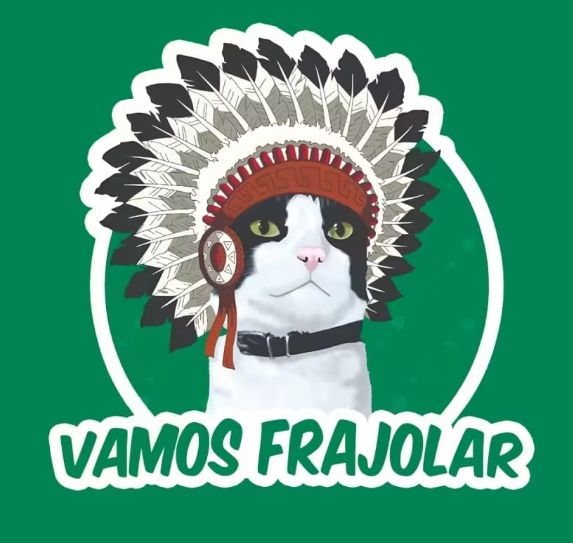

🏝️ São Sebastião
São Sebastião combina praias famosas, como Maresias, Juquehy e Camburi, com um importante centro histórico colonial. A cidade possui forte turismo, gastronomia e atividades ligadas ao mar, como esportes náuticos e passeios de barco. Também preserva comunidades tradicionais caiçaras.

Vamos Frajolar
- Instagram: @vamosfrajolar
- R. Praia Pontal da Cruz, 55 Sertão do Camburi - São Sebastião - SP
- Chave de Pix para doação: pix@vamosfrajolar.org
- Telefone: (12) 99208-2577
- Site: www.vamosfrajolar.org
PATA (Pronto Atendimento e Tratamento Animal)
- O PATA (Pronto Atendimento e Tratamento Animal)
- De São Sebastião oferece atendimento veterinário gratuito.
- Funciona de segunda a sexta, das 8h às 17h
- R. Vereador Mário Olegário Leite, 94, Centro, das 7h30 às 17h

Polícia Ambiental
- Alameda Santana, 444 - Pontal da Cruz
- Telefones: (12) 3862-4140 ou (12) 3862-0811.
- 3bpamb5cia2pel@policiamilitar.sp.gov.br
- Emergências e Flagrantes: 190 (Polícia Militar)